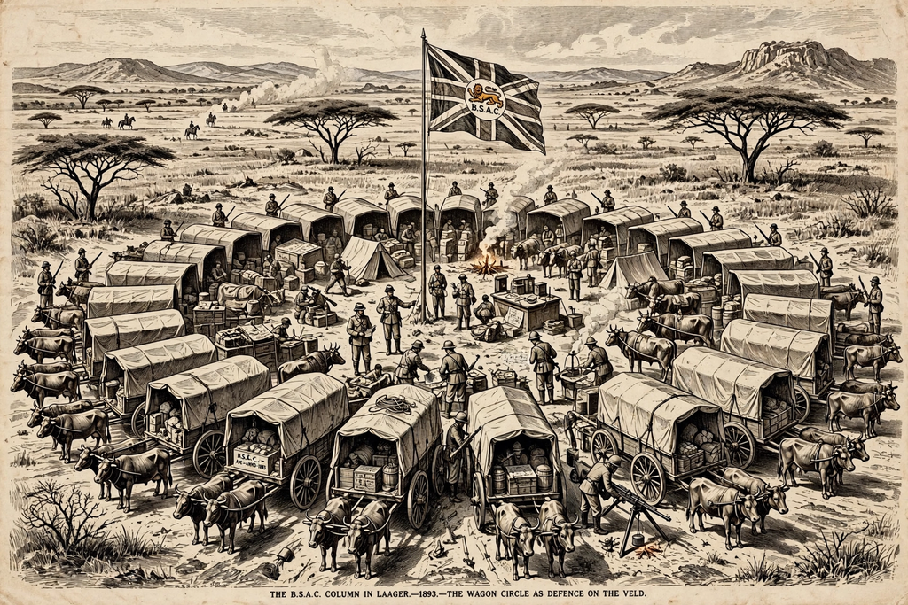

| First Matabele War | |
|---|---|
| Date | October 1893 – January 1894 |
| Location | Matabeleland and Mashonaland (present-day Zimbabwe) |
| Belligerents | British South Africa Company vs. Ndebele (Matabele) Kingdom |
| Ndebele ruler | King Lobengula |
| Result | Company victory; destruction of the Ndebele kingdom; occupation of Bulawayo |

The First Matabele War was fought between October 1893 and January 1894 between the British South Africa Company (BSAC) of Cecil Rhodes and the Ndebele (Matabele) kingdom of King Lobengula in what is now Zimbabwe. Provoked by disputes around the Rudd Concession, Ndebele raids on the Shona near Fort Victoria, and Rhodes's determination to seize Matabeleland, the brief war demonstrated the devastating effectiveness of the Maxim gun against massed spearmen. Company columns occupied Lobengula's capital, Bulawayo, in November 1893; the king fled north and died in early 1894, and his kingdom was annexed to the company's territories — a settlement whose grievances helped ignite the Second Matabele War (the First Chimurenga) two years later.
Lobengula, king of the Ndebele since 1870, ruled a militarised kingdom centred on Bulawayo, dominating the Shona peoples of Mashonaland through raiding and tribute. In 1888 he granted the Rudd Concession — exclusive mining rights in his territories — to agents of Cecil Rhodes, believing he had authorised only limited prospecting. Rhodes parlayed the concession into a royal charter for the BSAC (1889), whose Pioneer Column occupied Mashonaland in 1890 and founded Fort Salisbury. Lobengula, squeezed between the company, Boer and Portuguese ambitions, and his own war party, repeatedly disclaimed responsibility for incidents; in July 1893 his impis raided Shona villages near Fort Victoria, killing company subjects — the casus belli Leander Starr Jameson, the company's administrator, had been awaiting.
Jameson advanced in October 1893 with about 750 company volunteers in two columns, each equipped with Maxim guns, light artillery, and wagons laagered at night. At the Battle of the Shangani (25 October) and the Battle of Bembesi (1 November), Ndebele regiments charged entrenched company positions and were cut down by Maxim and rifle fire, losing perhaps 1,500 men at Bembesi alone against a handful of company casualties. Bulawayo was occupied on 4 November, its royal kraal burned by the retreating Ndebele. Major Patrick Forbes pursued Lobengula north toward the Shangani River; on 3–4 December 1893 Major Allan Wilson's patrol of 34 men, cut off across the river, was annihilated after a celebrated last stand — the Shangani Patrol, later mythologised in Rhodesian (and in Wilbur Smith's novel The Angels Weep) memory as a southern African "last stand" comparable to Custer's. Lobengula died in January 1894, probably of smallpox, while fleeing toward the Zambezi.
Matabeleland was opened to white settlement: Bulawayo was refounded as a settler town in 1894, farms and gold claims were pegged, and the Ndebele were pushed into reserves and subjected to hut tax and forced labour recruitment. The company's distribution of the spoils — land, cattle, and looted royal herds to volunteers — entrenched settler privilege. Resentment produced the coordinated Ndebele and Shona risings of 1896–97 (Second Matabele War and First Chimurenga), the foundational resistance narrative of modern Zimbabwe; the 1893 war remains commemorated and contested in Zimbabwean historiography as the moment of colonial conquest.